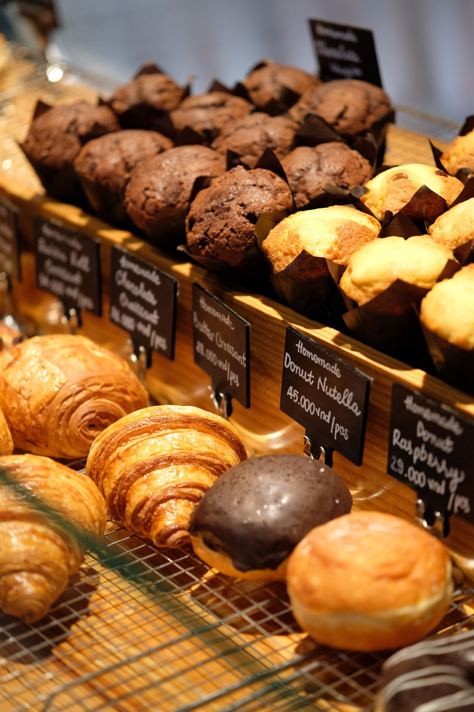
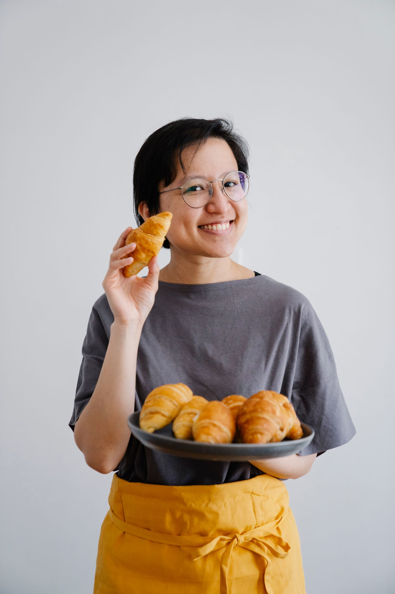

"Dai compleanni alla colazione di tutti i giorni, ormai prendiamo tutto qui. Le loro sfogliatine sono una piccola gioia che ci migliora la giornata."

www.pasticceriagemma.it | @pasticceriagemma | 051 234 5678